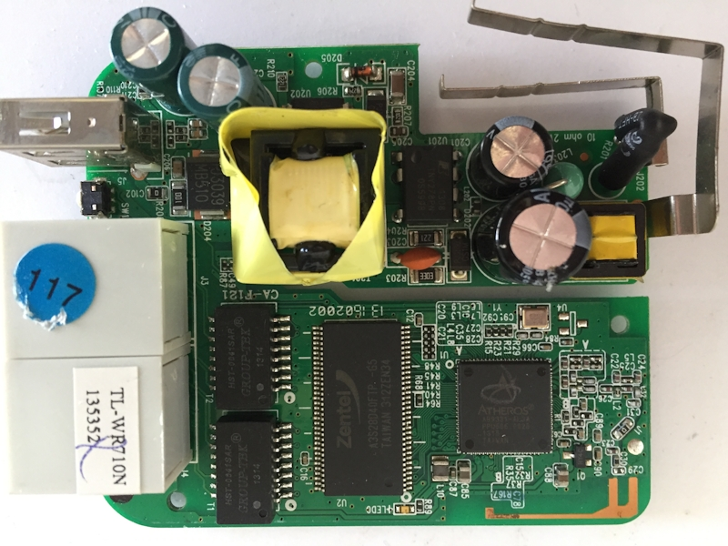

网络与审查

TL-WR710N图片
如果将单机看作是个体，网络就是社会了。先大致了解一下通俗意义上的网络，互联网。
网络基础
网络标准
- OSI:开放式系统互联模式，七层: 物理层、数据链路层、网络层、传输层、会话层、表示层、应用层
国际标准化组织。理论下的模型。
- TCP/IP:互联网协议套件，四层：链接层、网络层、传输层、应用层
最早发源于美国国防部的ARPA项目。事实上的(De facto)协议。
地址
- 网址
学名：统一资源定位符，URL(Uniform Resource Locator)，以当前这篇文章为例，它的网页网址是https://om-wei.github.io/20200912/network_censorship.html
网站部署在服务器上面，网站通常会有域名，上面网址中的域名为github.io。
我们进入一个网站，一般会先使用搜索引擎搜索关键词，点击搜索结果条目后浏览网页，每个条目对应于一个网址。
注：搜索引擎，国外有以做搜索发家并作为主要业务的Google、微软公司的Bing、俄罗斯的Yandex、紫色的Yahoo、倡导不收集个人隐私的DuckDuckGo，目前Bing可以直接并且稳定的访问。国内搜索引擎有Baidu（百度）、Sougou（搜狗）。
- IP地址
无论网站还是个人电脑，上网都要有IP地址。工作于网络层。
对于网站，IP地址不好记忆并且有时候可能会变更，所以会使用域名，它们的关系跟名字与学号差不多，不过域名一般不会重名。
IPv4 使用32位地址空间
IPv6 使用128位地址空间
IPv4地址配置，举例如下：
IP地址 | 子网掩码 | 网关
192.168.1.2 | 255.255.255.0 | 192.168.1.1
域名解析是由域名获取相应的IP地址，所以有做域名解析的服务器。
常用好记的域名(DNS)服务器IP有223.6.6.6(阿里-Alibaba), 8.8.8.8(Google) 114.114.114.114(电信)
使用一些命令行工具可以看到网站对应的IP地址，它们有很有意思的命名：ping（声纳的声音——呯）、dig（挖掘）、drill（钻孔），以ping为例
% ping www.github.io
PING www.github.io (185.199.109.153): 56 data bytes
Request timeout for icmp_seq 0
64 bytes from 185.199.109.153: icmp_seq=1 ttl=46 time=132.146 ms
^C
--- www.github.io ping statistics ---
2 packets transmitted, 1 packets received, 50.0% packet loss
round-trip min/avg/max/stddev = 132.146/132.146/132.146/0.000 ms
上面使用ping命令测试www.github.io网站
返回的第一行数据就有了它的IP地址185.199.109.153
在收到第一个响应后中止，ttl（Time To Live），响应时间是132.146毫秒
注：hosts文件，是电脑本地维护的域名-IP列表，电脑先使用这个文件获取IP信息，如果没有找到IP再进行DNS解析，以前通过修改hosts文件的方法可以访问Google。
- MAC地址
MAC，即物理地址，网卡地址，48位，工作于数据链路层。
从用户角度看，既然有MAC地址，为什么要用IP地址，只用域名就可以了。组网时使用IP比使用MAC地址更方便，可以更好的建立网段。域名与IP地址，IP地址更容易与计算机、网卡打交道，它是固定长度，路由跳转计算量较小。网站域名一个英文字符占8位，这样一来地址长度较长并且长度不一致，路由跳转时更难处理。现实中快递公司分拣快件时，一般看快递单上的区域编号来分类，如果挨个看具体地址将会是一项费时费力的工作。
组网
- 点到点: 两台电脑可以用一根双绞线连接。如果每跟一个人就需要一根网线的话，我们地球就成了蚕宝宝了。所以想办法让很多人共用通信线路，而又互不影响。
- 局域网：LAN, (Local Area Network)使用内网IP，一般是有限区域如学校、楼宇里计算机的连接。
当使用集线器将多台主机连接到一起，当同时发送数据时，就会有碰撞，就是碰碰车那样的碰撞，所以网卡要做载波监听多路访问/冲突检测，CSMA/CD(Carrier Sense Multiple Access with Collision Detection)，发送数据前，监听有没有其它主机有数据在发送，如果有则延时一段时间再发送。集线器在局域网较大，网络数据多时，CSMA/CD可以保障数据完整，碰撞多了还是会影响网速。交换机解决了这个问题，通过分析MAC地址可以将数据放到单独的通道。交换机工作于OSI的二层即数据链路层，还有三层、四层交换机。在第三层，即网络层就可以理解IP地址了。
- 广域网：WAN, (Wide Area Network)可以将不同局域网或城域网连接起来组成更大的网络，使用路由器。
- 互联网：互联网是国际网络，网络互联。我们可以浏览服务器在国外的网页，可以与海外的人通信。信息的传播由此变得更为广泛与迅速。
- 物联网：为物品联网。IPv4有2^32个地址将要分配完毕。IPv6提供了大量的IP地址，有2^128个，以至于说“为每一粒沙子分配一个IP”。NB-IoT，窄带物联网，让每个物联网设备像手机那样上网，节省频谱带宽资源。目前为止，像共享单车、云柜、智能印章这类物联网应用，从技术角度来讲，主要是控制“锁”的一种方式。我们逐渐形成“公共资源”的概念，需要共同去思考。共享单车，单一的支付方式，如果手机没电了，不会使用或者没有手机怎么办？。城市里资源淤堵，下沉到城镇以至农村，会是什么形式呢？或许让它也可以使用卡或者硬币——俺们叫蹦蹦钱。
外卖，缺少行动能力的老人很少直接受益。这类新鲜事物，很多人还是不很熟悉，而有部分人会乘机愚弄。
开头的图片是一款家用无线路由，TL-WR710N电路板顶层照片。上面是电源部分，下面是网络部分，包括两个RJ45接口(J3、J4)一个WAN/LAN口和一个LAN口、网络变压器(T1、T2)、SDRAM-存储器(U2)、主控芯片(U1)等，电路板底层有固件存储器(FLASH ROM)。
它工作于多种模式。通过配置，可以当两口的有线交换机，网络中继、无线AP、无线路由等。当路由使用时，WAN/LAN口作为WAN口，这个口是接引入的外网线缆。家用路由通常只有一个WAN口，而企业级路由器有很多个WAN口，这样的路由器维护着路由表，它决定了过往的数据包的下一跳。这与邮局类似，村里的邮局发往外部的信件/包裹的下一站可能是固定的上一级邮局，而城里的总局分配信件/包裹时，下一站会有多个总局或分局可选。通常会选较近线路，而不是让大量的信件/包裹兜圈子。
进入一个网址，发生了什么? 比如在浏览器里按下网页链接，大致会：
1，域名解析，获取服务器IP地址
2，根据IP，主机访问服务器，获取相关内容
3，服务器返回数据，主机接收数据，浏览器显示内容
途中经过多个路由器。实际底层过程非常复杂，涉及好多东西。
网络审查
这个话题有时会比较敏感。
与外界接触就存在未知，网络是一种接触外界的媒介，本身就存在风险。
作为邻居国的朝鲜直到现在（2020年）互联网都处于封闭状态，通常只能使用朝鲜国内的内联网。
对于低年级学生使用局域网比较好，内容由学校提供。当孩子有了一定的识别、判断能力后，再接触更多信息会好一些。
网络防火墙是一种网络防御设备，用于隔离网络。通过定义一些规则，过滤出入的数据流，以防止有害输入，减少有害输出。
网络审查会用到的方法包括：
- DNS干扰：域名解析时，DNS返回无效的IP地址。这相当于有人跟学校管理处查询张三同学的学号，回应他无效的。
- IP地址禁止：对特定网站服务器使用的IP地址加入过滤清单，当有访问被禁止的IP的数据包时，会被网关。类似于有人想根据学号查看某些同学的档案，凡是有关学号的访问请求与回应一律禁止。
- 内容审查：对数据的内容过滤。能对关键字进行审查、过滤掉不适合的内容。读初中时有这样的情况，老师会检查学生来往的信件内容，比如让这位学生读出信件内容，要禁止类似早恋等行为嘛，内容不合格不予通过。
翻墙
中学时，俺们坏学生为了上网，确实是要翻墙到网吧上网，那是学校的实体墙。而现在为了访问像Google这样的网站，网民们也形象的称为“翻墙”，这是国家的网络防火墙（Great Firewall）。
当时，被老师抓住上网，最怕让叫家长。而网络审查一定程度上相当于家长制的体现，因为文化差异，西方的不少观念会冲击到我们长期以来的传统观念，所以有所限制。在电视剧西游记中，常常是这样的，有地方妖怪作乱，孙悟空他们较量一番，之后上天跟反应，知道是哪里问题，如嫦娥的玉兔、牛魔王的红孩儿、六耳猕猴等，最后降伏。这也有家长/家族制的体现。
对于翻墙，理性的看待，一定程度上取决于怎么使用它。有些事物与其禁止、控制不如疏通。很多人也不愿意当温室里的花朵。一方面它确实可以开阔人们的视野，另一方面如果用它来做坏事，比如政治上的敌对，后果会很严重。阻止访问Google，可以让本土的百度在前期有所发展，只有内部竞争，缺少了鲶鱼效应。网上形成了这样的说法，“内事问百度，外事问谷歌”。
以前是可以直接上Google。到后来事情逐渐变复杂了，2010年谷歌退出中国，不能正常使用谷歌了。
 google_logo
现在，翻墙大都需要付出额外的代价，无论是金钱花费还是时间。
突破网络审查通常使用网络代理，VPN、VPS。
双方通信时，中间会有拦截过滤，利用代理方绕过它。
A当作是己方，B当作是想要访问的网站，A和B通信中间要经过C，C当作时网络防火墙，而C不容许其通信，A就想办法先跟D通信，D就是代理服务器，可能部署在境外，它的特殊之处在于它可以和B通信不受C的制约，与A通信建立虚拟局域网，它的任务是中转A与B的通信内容。A和D通信也可能会受到C的拦截，所以A和D的通信一般会使用协定好的加密技术，C没有解密就不理解里面的内容，故放行。
以Shandowsocks说明，中文名影梭，原作者Clowwindy（后因政府压力停止维护），最初用Python语言实现。Shandowsocks是基于socks5的，socks5位于OSI的第五层，即会话层。它分为两部分，服务器端，客户端。在代理服务器上面部署服务器端，监听由主机发来的数据请求，进行解密后向目地服务器请求数据，最后将服务器返回来的数据加密后转发给主机上运行的客户端。
网络审查与突破审查已经是长时间存在的状态了，而两方面使用的技术、方法、工具都不断的更新换代。当付出的代价足够大，就会变得不值得如此，尤其当这没有什么秘密可言时。或许以后我们的网络环境会宽松一些。
google_logo
现在，翻墙大都需要付出额外的代价，无论是金钱花费还是时间。
突破网络审查通常使用网络代理，VPN、VPS。
双方通信时，中间会有拦截过滤，利用代理方绕过它。
A当作是己方，B当作是想要访问的网站，A和B通信中间要经过C，C当作时网络防火墙，而C不容许其通信，A就想办法先跟D通信，D就是代理服务器，可能部署在境外，它的特殊之处在于它可以和B通信不受C的制约，与A通信建立虚拟局域网，它的任务是中转A与B的通信内容。A和D通信也可能会受到C的拦截，所以A和D的通信一般会使用协定好的加密技术，C没有解密就不理解里面的内容，故放行。
以Shandowsocks说明，中文名影梭，原作者Clowwindy（后因政府压力停止维护），最初用Python语言实现。Shandowsocks是基于socks5的，socks5位于OSI的第五层，即会话层。它分为两部分，服务器端，客户端。在代理服务器上面部署服务器端，监听由主机发来的数据请求，进行解密后向目地服务器请求数据，最后将服务器返回来的数据加密后转发给主机上运行的客户端。
网络审查与突破审查已经是长时间存在的状态了，而两方面使用的技术、方法、工具都不断的更新换代。当付出的代价足够大，就会变得不值得如此，尤其当这没有什么秘密可言时。或许以后我们的网络环境会宽松一些。
 wikipedia_logo
除了翻墙之外，还有一种方案，建立和使用网站镜像。
wikipedia_logo
除了翻墙之外，还有一种方案，建立和使用网站镜像。
目前很多提到智能，如智能设备、智能家居、人工智能，希望能够良性发展。如果不对头，尝试拔掉网线，切断电源。
以正治國，以奇用兵，以無事取天下。吾何以知其然哉？以此：
天下多忌諱，而民彌贫；人多利器，國家滋昏；人多伎巧，奇物滋起；法令滋彰，盗賊多有。
引用自《老子·五十七章》